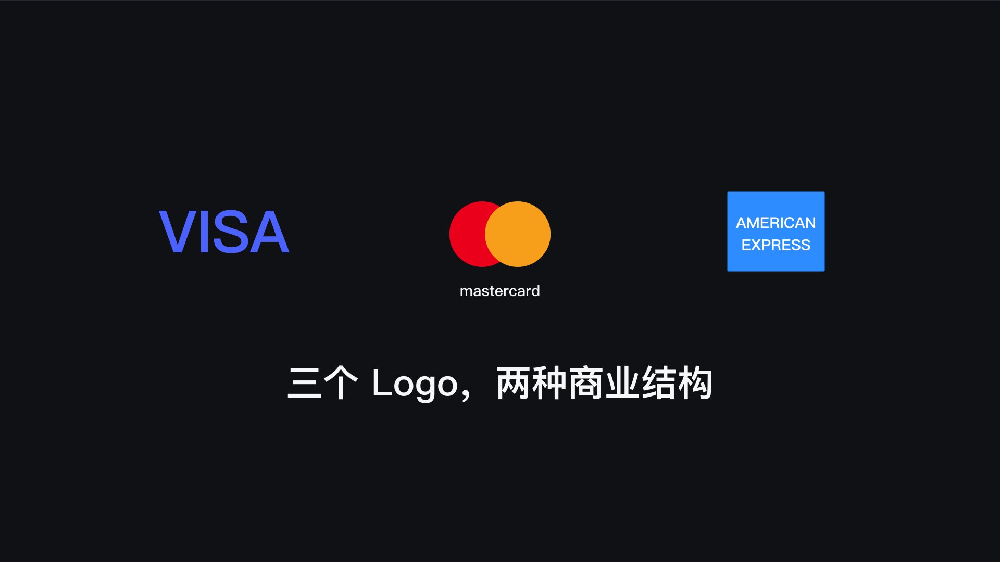
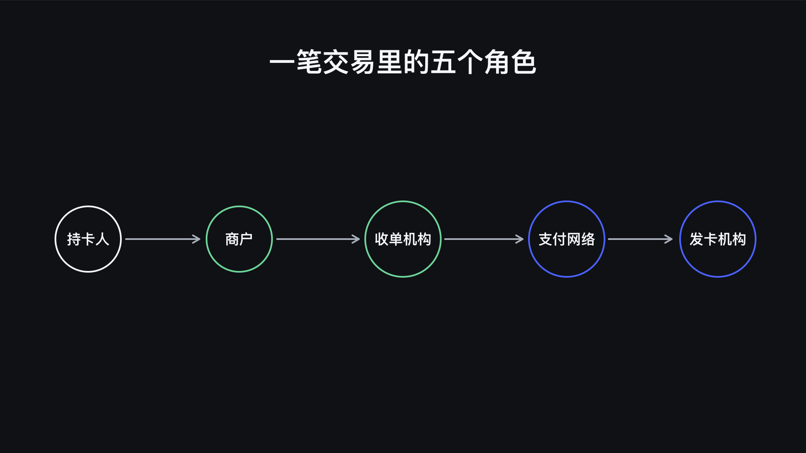
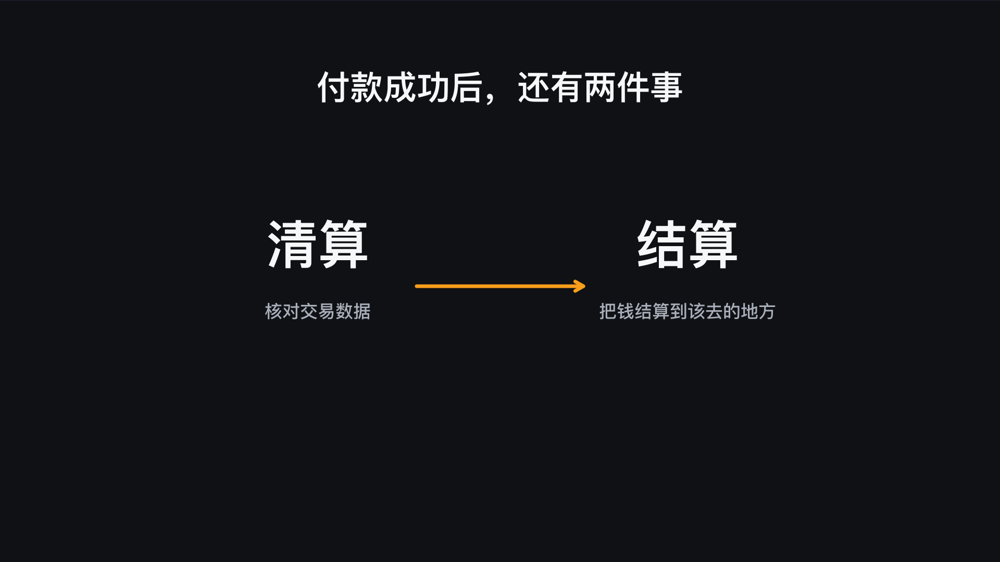
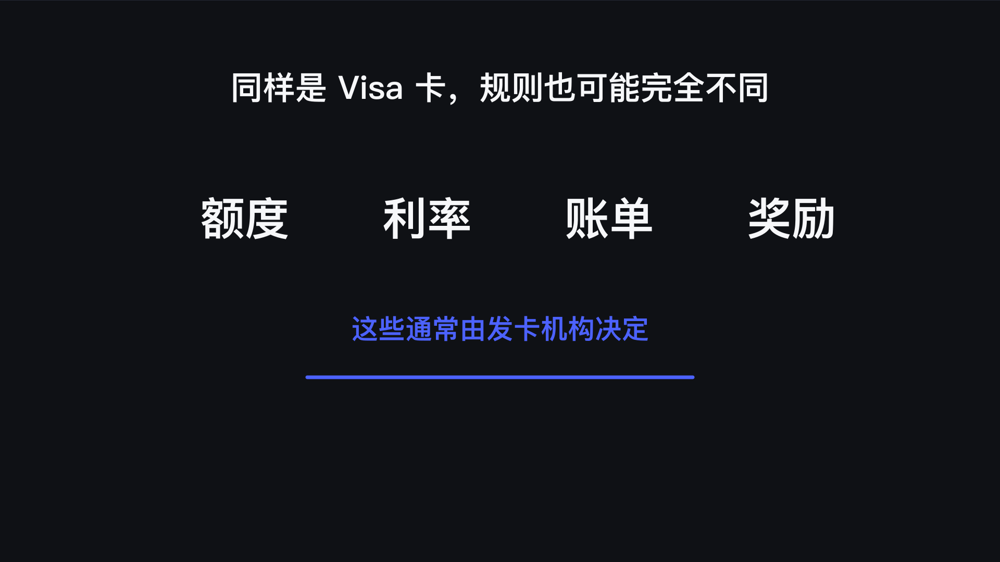
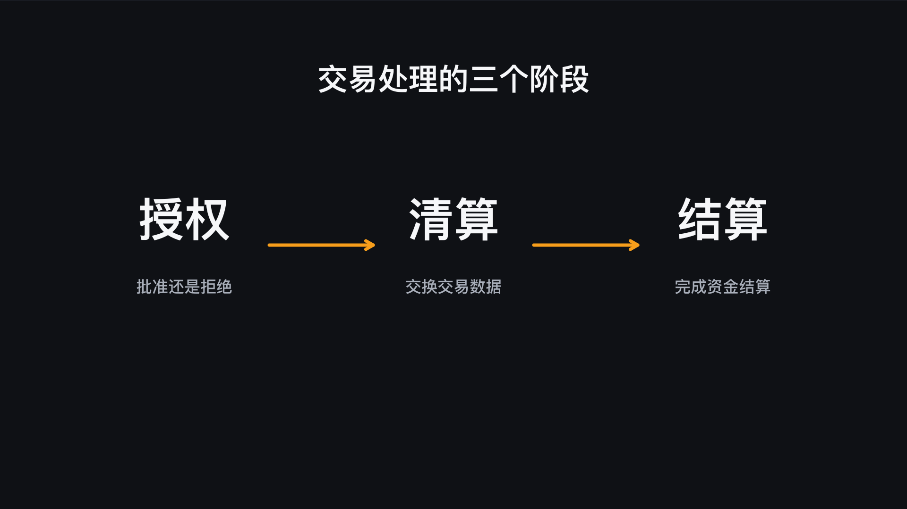
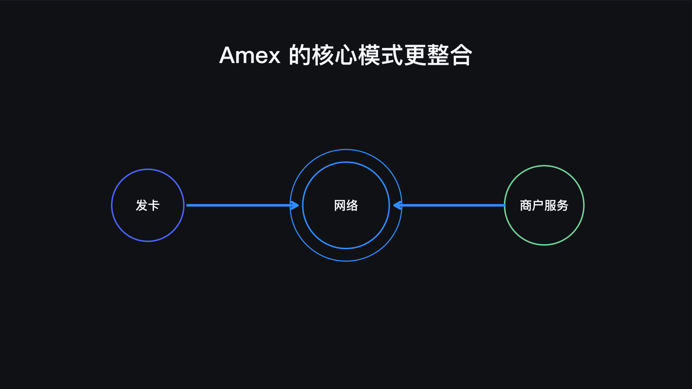
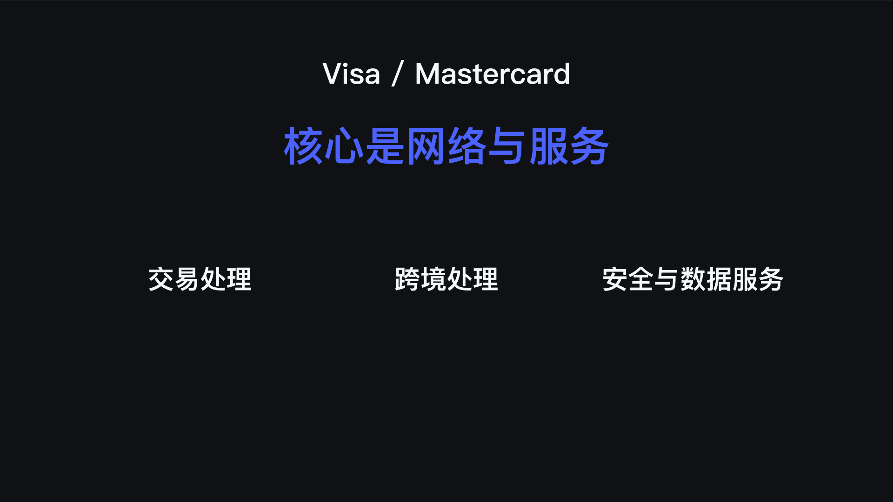
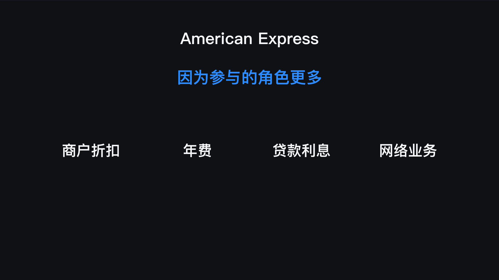
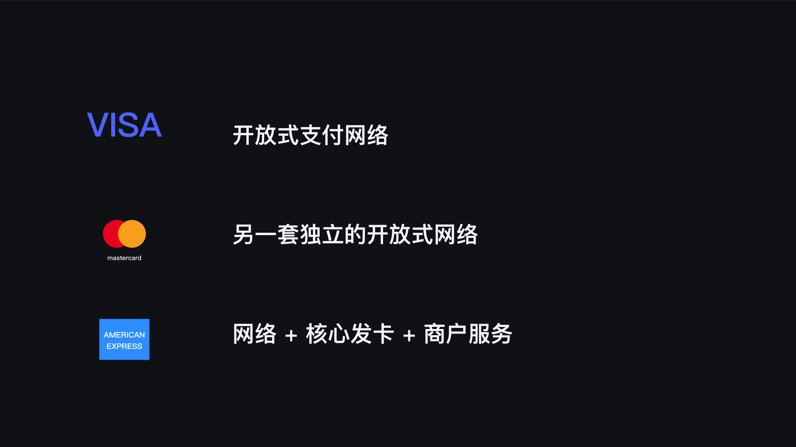

先说结论：Visa 和 Mastercard 主要是开放式支付网络；American Express 也有自己的支付网络，但在很多核心产品里还会自己发卡、管理持卡人并直接服务商户，因此业务结构更加整合。
本文只解释三家的业务角色和运作机制，不讨论哪一张信用卡值得申请，也不把某一家概括成所有场景都更好。

三个 Logo 到底代表什么
Visa、Mastercard，还有 American Express，这三个 Logo 大家应该都见过，但它们并不是三家做同一件事的公司。
Visa 和 Mastercard 主要负责支付网络。它们把银行、商户和收单机构连接起来，让一笔信用卡交易能够完成。
American Express 也有自己的支付网络，但它在很多产品里还会自己发卡、自己管理持卡人，也会直接服务商户。
所以，这篇文章不讨论哪张信用卡值得申请，而是把三家公司到底有什么区别说清楚。
一笔信用卡交易里有谁
要看懂三家的区别，先看一笔信用卡交易里面有谁。

- 持卡人：使用信用卡付款的人。
- 商户：接受付款的一方。
- 发卡机构：审核申请、发行卡片、提供额度、出账单并管理账户。
- 收单机构：帮助商户接入银行卡支付并处理收款。
- 支付网络：在发卡端与收单端之间传递交易信息并执行网络规则。
商户收到你的付款以后，不是自己直接跑去找你的银行。它通常会把交易交给收单机构，再通过 Visa、Mastercard 或 Amex 的网络，把授权请求送到发卡机构。
发卡机构检查额度、卡片状态和风险，然后决定批准还是拒绝。这个结果再沿着网络返回给商户。
付款成功以后，后面还有清算和结算。简单理解，就是参与这笔交易的机构先核对数据，再把钱结算到该去的地方。

这套结构里面，发卡机构负责你的账户，收单机构负责商户，卡组织负责把两边连起来。
Visa 做的是什么
Visa 本身不是给普通消费者发信用卡的银行。
你拿到一张 Visa 卡，真正审核申请、给你信用额度、收取还款的，通常是卡面上的银行或其他金融机构。Visa 提供的是品牌和支付网络。
银行把卡发行出来，商户通过收单机构接入 Visa。你刷卡以后，Visa 的网络负责传递授权信息，后面也会参与清算、结算和跨境处理。
除此以外，Visa 还提供安全、风控、令牌化和数据服务。

所以卡片上虽然有 Visa 的 Logo，但你的账单不是 Visa 寄来的，信用额度也不是 Visa 决定的。同样都是 Visa 卡，可能来自完全不同的银行，产品规则也可以完全不同。
Mastercard 做的是什么
Mastercard 的基本模式和 Visa 很接近。
大多数 Mastercard 也不是由 Mastercard 自己发给消费者，而是由银行和金融机构发行。
Mastercard 负责运营另一套独立的支付网络，把发卡机构、收单机构、商户和持卡人连接起来。
它同样会处理授权、清算、结算和跨境交易，也提供网络安全、身份验证、数据分析、开放银行和资金转移等服务。

所以从基本角色来看，Visa 和 Mastercard 是同一类公司。它们都更像支付网络运营者，而不是直接给大多数消费者放贷的银行。
Visa 和 Mastercard 是不是一样
它们很像，但不是同一家公司，也不是同一套网络。
两家公司各自和银行、收单机构及其他合作伙伴签订协议，也各自制定网络规则、技术标准和收费方式。它们提供的卡片等级、附带权益、安全产品和增值服务也不完全相同。
跨境交易时，两套网络的换算和处理细节可能不同；遇到争议交易时，网络规则也有各自的具体要求。不过，这些差别不代表其中一家在所有场景都一定更好。
站在普通持卡人的角度，很多最直接的体验其实来自发卡机构。比如账单、额度、利率、奖励和客服，通常都不是 Visa 或 Mastercard 直接决定的。
所以一张 Visa 和一张 Mastercard 用起来差很多，很多时候并不是两个 Logo 造成的，而是它们背后的银行和产品本来就不同。
Amex 为什么不太一样
American Express 也运营自己的支付网络，但它的核心模式更整合。
很多美国运通信用卡本身就是 American Express 发行的。申请审核、信用额度、账单、还款和客服，都由 American Express 管理。
与此同时，商户也可以直接和 American Express 建立受理关系，交易最后仍然通过 Amex 自己的网络处理。

也就是说，在很多核心产品里，American Express 同时站在发卡、网络和商户服务这几个位置上。这就是大家常说的闭环模式。
因为持卡人这一端和商户这一端都能直接连接到 Amex，它可以看到一笔交易从持卡人到商户的完整关系。
不过，“闭环”不能理解得太绝对。American Express 也和其他银行合作，有些 Amex 卡由第三方银行发行，也有第三方收单机构帮助商户接入 Amex 网络。
所以更准确的说法是：Amex 自己的核心业务高度整合，同时它也有一套合作伙伴网络。
三家的收入为什么不同
三家的结构不同，赚钱的方式自然也不完全一样。
Visa 和 Mastercard 的核心收入来自支付网络和相关服务，比如交易处理、跨境交易，以及安全、风控、数据和其他增值服务。

它们通常不是普通信用卡账户的贷款方，所以持卡人产生的信用卡利息，主要属于发卡机构，而不是 Visa 或 Mastercard。
American Express 不一样。因为它自己也会发卡和放贷，所以除了支付网络和商户服务，它还可以获得持卡人年费、贷款利息和其他账户收入。

商户接受 Amex 以后产生的商户折扣收入，也是它业务里的重要部分。
这并不是说 Visa 和 Mastercard 不向银行或商户收费，而是说它们主要依靠网络和服务赚钱；Amex 因为同时参与的角色更多，收入来源也更复杂。
商户和数据关系也不一样
在典型的 Visa 或 Mastercard 交易里，发卡机构最了解持卡人账户，收单机构直接服务商户，卡组织位于中间，把两边连接起来。
在 Amex 自己的闭环业务里，它既可以直接服务持卡人，也可以直接服务商户。
这种端到端关系，让 Amex 更容易把消费、会员权益、商户优惠、风控和客服放在同一个体系里。比如 Amex Offers 这种针对持卡人的商户优惠，就和它同时连接持卡人与商户的模式有关。
Visa 和 Mastercard 当然也有大量数据、安全和营销服务，只是它们典型的分工方式不同，不会像 Amex 自营卡那样同时拥有持卡人账户和商户关系。
最后把三家放在一起
| 品牌 | 核心模式 | 谁通常负责持卡人账户 | 关键特点 |
|---|---|---|---|
| Visa | 开放式支付网络 | 合作银行或金融机构 | 连接发卡端与收单端 |
| Mastercard | 开放式支付网络 | 合作银行或金融机构 | 独立网络及安全、数据等服务 |
| American Express | 核心业务高度整合 | 许多核心产品由 Amex 管理，也有第三方合作 | 网络、核心发卡与商户服务结合 |

Visa 是一套开放式支付网络，主要连接发卡机构和收单机构。
Mastercard 的基本模式和 Visa 很接近，是另一套独立的全球支付网络，也经营大量安全、数据和其他服务。
American Express 也有自己的支付网络，但在很多核心产品里，它还会自己发卡、管理持卡人，并直接服务商户，所以整个体系更加整合。
简单一点说，Visa 和 Mastercard 主要负责修路，让不同银行发行的卡可以在各自的网络里完成交易。
Amex 也修路，但很多时候，卡是它自己发的，持卡人由它自己服务，商户也可以直接和它打交道。
核心结论：看一张信用卡时，不要只盯着卡面上的 Visa 或 Mastercard Logo。额度、利率、账单、奖励与客服体验，通常更应该看发卡机构和具体卡片产品。
免责声明：本文仅用于支付机制与信用卡基础知识教育，不构成金融、投资、税务或法律建议。支付网络规则、服务和合作关系可能调整，请以 Visa、Mastercard、American Express 及相关发卡机构的最新官方资料为准。
官方资料
前后篇
上一篇：Hilton Amex 三张卡限时开卡礼：70K、130K 还是 200K？
下一篇：大陆用户怎么选美国手机号？Tello、Ultra Mobile 和 Google Voice 有什么区别